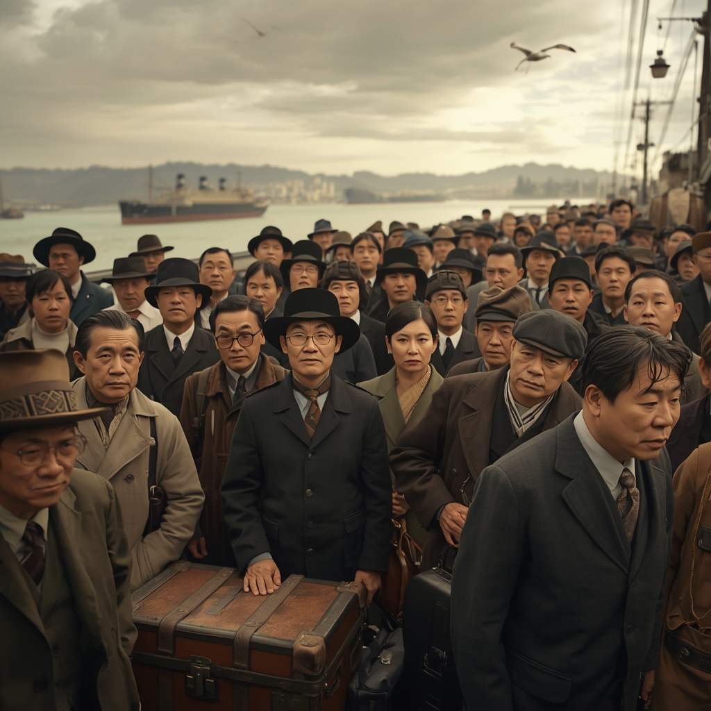
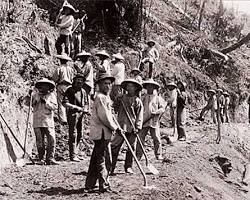
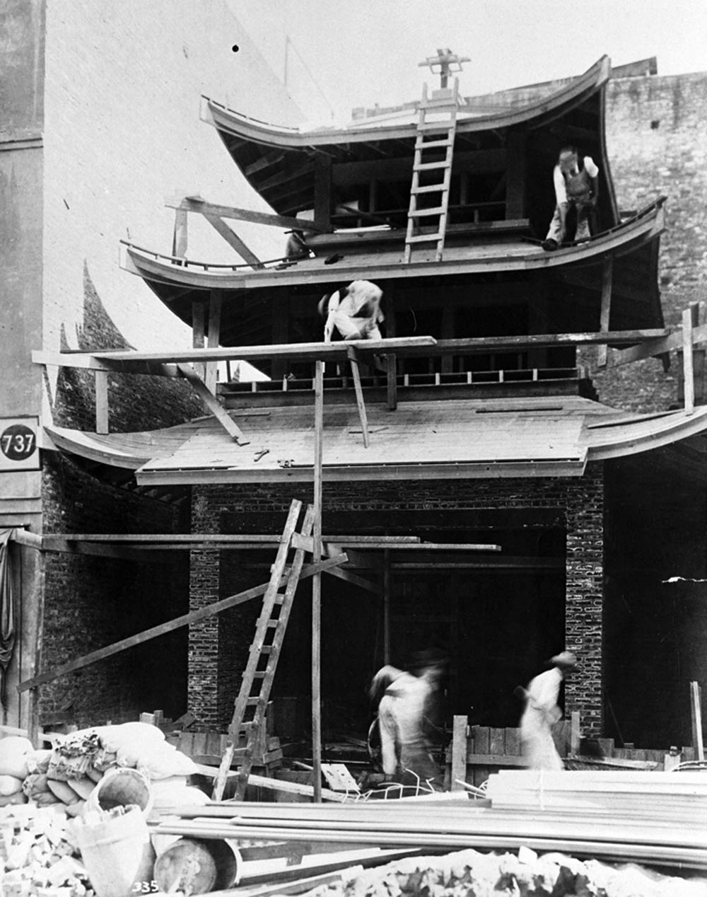
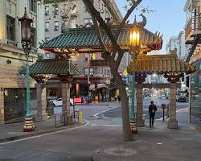

The Iron Road: Building the Transcontinental
🏮 Key Terminology & Resultative Complements
In this project, I utilize specific historical terminology and Resultative Complements (Verb + Result) to describe the timeline of San Francisco's Chinatown:
记住 (jì zhù) - Remember firmly
准备好 (zhǔn bèi hǎo) - Fully prepared
赢了 (yíng le) - Won / Achieved victory
金山 (Jīn Shān) - "Gold Mountain"
横贯大陆铁路 - Transcontinental Railroad
黄金德案 - U.S. v. Wong Kim Ark
旧金山大地震 - SF Earthquake
持续的韧性 - Continued Resilience
Historical Milestones
Immigrants called the city “Gold Mountain” (Jīn Shān / 金山). Driven by civil war and famine in Guangdong, they were 准备好 (zhǔn bèi hǎo - prepared) to find wealth.
Despite the Foreign Miners’ Tax, they showed 持续的韧性 (Chí xù de rèn xìng) by opening businesses that served the growing city.


🔗 NPS SourceThe 华工 (Huá gōng) were the backbone of the railroad. They blasted through solid granite and worked under 35-foot snowdrifts.
History must 记住 (jì zhù - remember firmly) that without their labor, the "Iron Road" would never have been finished.
黄金德 (Huáng Jīn dé) was born in SF but denied re-entry after a trip to China. He fought this and 赢了 (yíng le - won).
This established birthright citizenship for everyone born on U.S. soil under the 14th Amendment.

City officials tried to move residents to Daly City or Hunter's Point. The community 准备好 (zhǔn bèi hǎo) a plan to use "Pagoda Style" architecture.
By making 唐人街 (Táng rén jiē) a tourist icon, they successfully 守住 (shǒu zhù - defended) their place in the city center.
Chinatown has 赢了 (yíng le) the battle against displacement for 175 years. It remains a political and cultural anchor.
We must 记住 (jì zhù) that these pagoda roofs are symbols of a community that refused to be moved.
